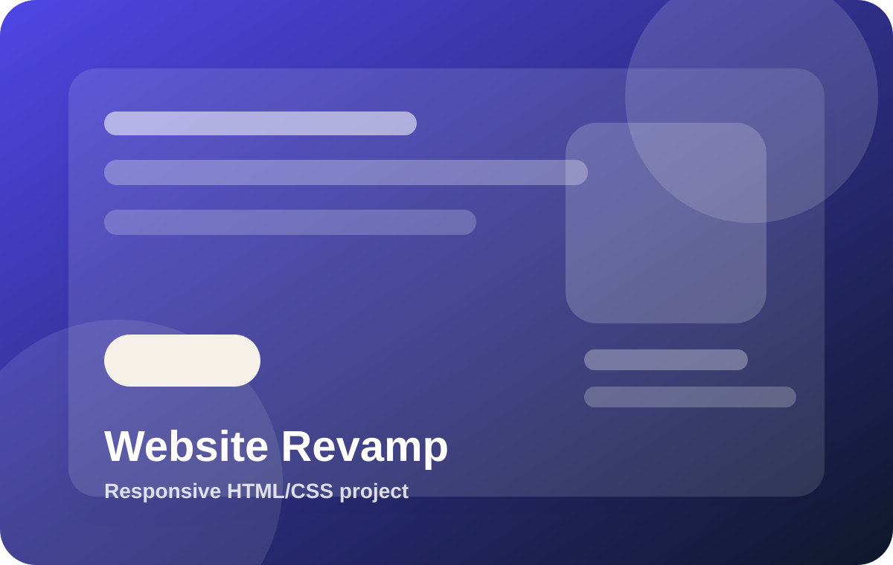
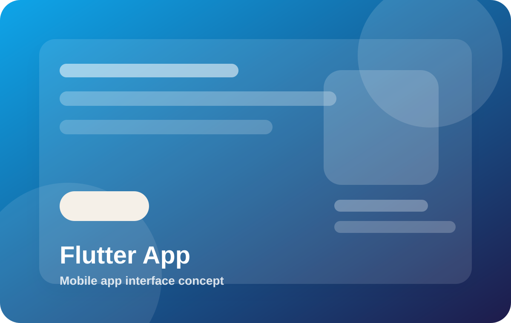
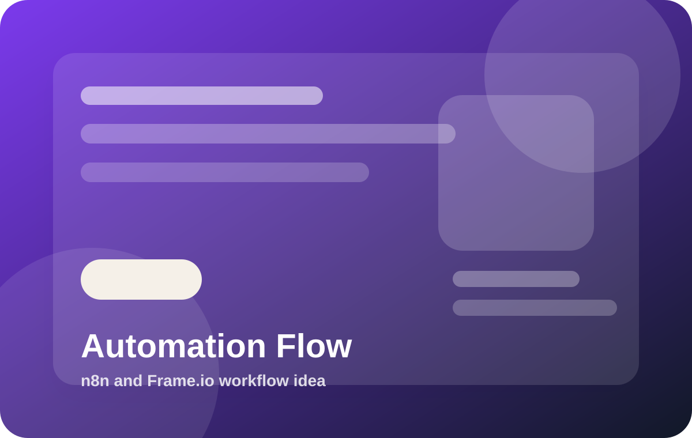
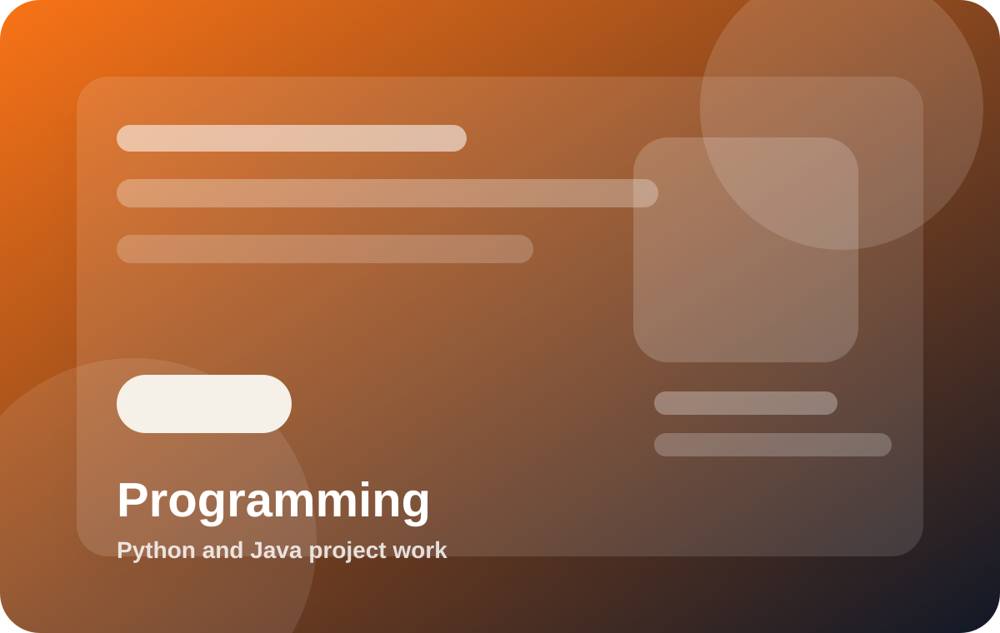

Funngro Website Revamp
A responsive two-page website redesign concept with Teenlancer and Company pages.
View Case StudyApp Developer • Web Developer • Automation Builder
I’m Omkar Hase, a B.Tech CSE student who works with Flutter/Dart, HTML, CSS, JavaScript, Python, Java, n8n, and Frame.io workflows.
Project Gallery
A clean project grid designed for quick scanning. Each card can later be replaced with real screenshots, GIFs, videos, or live project demos.

A responsive two-page website redesign concept with Teenlancer and Company pages.
View Case Study
Mobile app UI structure made with Flutter/Dart for clean screens and navigation.
View Case Study
Automation concept for connecting tasks, apps, and approvals using n8n-style flows.
View Case Study
Academic and practice projects using Python and Java for logic, files, and OOP concepts.
View Case StudyCase Studies
Each case study follows a simple structure: problem, process, and result.
The task needed a cleaner two-page website experience for Teenlancers and Companies.
I planned the page structure, wrote SEO-friendly content, built responsive HTML/CSS pages, and hosted the final version on GitHub Pages.
The project was approved on Funngro and became a strong sample of my website design and development work.
A freelancer needs a portfolio that shows skills and proof of work without looking cluttered.
I designed a focused structure with a hero section, project gallery, case studies, about section, and direct contact links.
The final sample looks professional, is mobile-friendly, and can be customized for real client use.
Manual repetitive tasks waste time and make project tracking harder.
I use workflow thinking with tools like n8n and Frame.io to connect actions, approvals, and task updates.
The approach helps create smoother systems for project execution, content review, and task automation.
About Me
I’m Omkar Hase, a B.Tech CSE student interested in application development, web development, programming, and automation workflows. I can build mobile apps with Flutter/Dart, websites with HTML, CSS and JavaScript, and workflow systems using n8n and Frame.io.
I also work with Python and Java, and I use Figma for basic UI planning and layout ideas. My focus is to create clean, useful, and presentable digital work.
Contact
Reach out directly through email, GitHub, or LinkedIn. No friction, no unnecessary form.